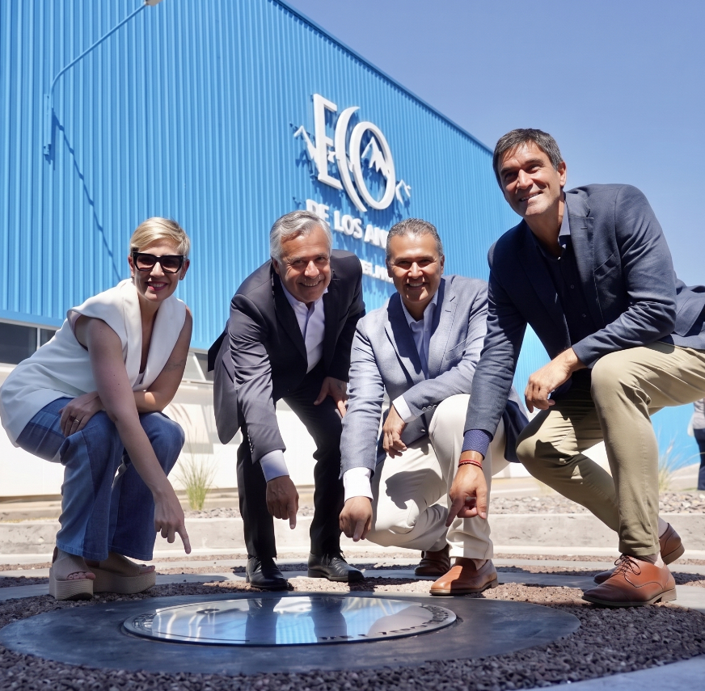
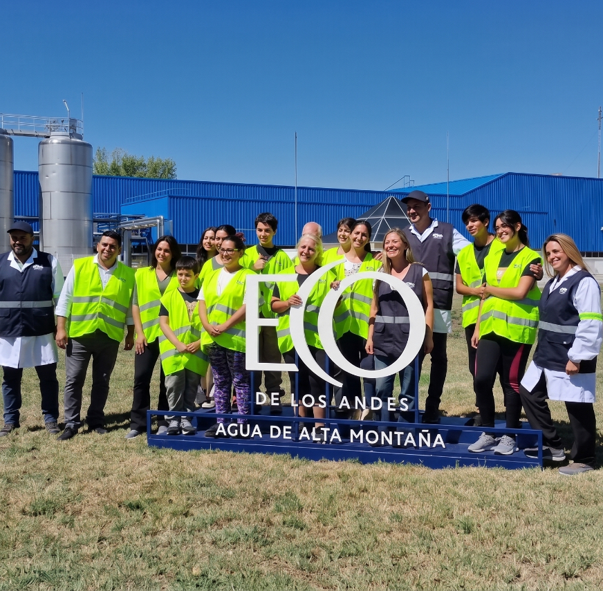

Marcas
Tenemos más de 200 productos para que te deleites.
En Nestlé, estamos presentes en distintas categorías como aguas, lácteos, café, alimentos para mascotas, chocolates, entre muchas otras. Conocé más.
Eco Aguas y Bebidas Saludables es una compañía de Nestlé y Cervecería y Maltería Quilmes que opera en Argentina hace más de 30 años, acercando a los consumidores marcas emblemáticas como Eco de los Andes, Glaciar y Nestlé Pureza Vital.
Cuenta con dos plantas industriales ubicadas en Tunuyán, provincia de Mendoza y Moreno, provincia de Buenos Aires, desde donde garantiza la distribución a todo el país, y sus oficinas centrales ubicadas en Núñez, Ciudad Autónoma de Buenos Aires.
Gracias al compromiso de sus más de 220 de colaboradores, asegura los más altos estándares de calidad en sus productos y trabaja con foco en la innovación para dar respuesta a las tendencias y preferencias de los consumidores.
Desde el inicio de las operaciones la empresa se ocupa de llevar a cabo diversas estrategias para la gestión responsable del agua, embarcándose en un camino hacia la regeneración; para ayudar a proteger, renovar y restaurar el medio ambiente y aumentar el bienestar de las comunidades y de nuestros consumidores.
Como parte de este camino y reafirmando nuestro compromiso con las cuencas donde operamos, somos parte de la Alliance for Water Stewardship (AWS), una alianza global de empresas del sector privado, el sector público y ONGs; trabajando juntos para proteger los recursos hídricos compartidos. A través de su estándar certifica a empresas que trabajan de manera colaborativa y transparente en la gestión sostenible del agua, no sólo puertas adentro de la fábrica sino también en el cuidado y preservación de la cuenca donde operan. Para más información visitá: a4ws.org/certification

En 2023, la planta de Tunuyán obtuvo la Certificación Platino, el máximo ranking de la Alliance for Water Stewardship (AWS). Está certificación la ha convertido en la primera empresa de Mendoza en obtenerla, la primera del sector y en la primera del país en obtener el ranking platino.
Si querés conocer más de nuestro compromiso hacé click acá
Si querés conocer más de nuestro plan - hacé click acá
Si querés conocer más de nuestro equipo involucrado con la Gobernanza Interna del Agua-hacé click acá
En el marco de nuestro proceso de Recertificación del Alliance for Water Stewardship Standard (AWS) en 2025, queremos compartir con ustedes, nuestro público y partes interesadas, el Anuncio Público a las Partes Interesadas. Estamos seguros de que sus comentarios y aportes serán esenciales para fortalecer nuestra gestión sostenible del agua tanto en el sitio como en la cuenca local.
Para acceder al anuncio público a las partes interesadas-hace click acá

Es un orgullo para Eco Aguas y Bebidas Saludables comenzar la certificación inicial del Alliance for Water Stewardship Standard (AWS) V2.0-Alianza por el Cuidado Compartido del Agua en nuestra planta en Moreno, Provincia de Buenos Aires.
Si querés conocer más de nuestro compromiso hacé click acá
Si querés conocer a nuestro equipo involucrado con la Gobernanza Interna del Agua - hacé click acá
Si querés conocer nuestro plan de gestión sostenible del agua - hacé click acá
Si querés conocer nuestro informe de esfuerzos y resultados - hace click acá
En el marco de nuestro proceso de certificación inicial del Alliance for Water Stewardship Standard (AWS) en 2025, queremos compartir con ustedes, nuestro público y partes interesadas, el Anuncio Público a las Partes Interesadas. Estamos seguros de que sus comentarios y aportes serán esenciales para fortalecer nuestra gestión sostenible del agua tanto en el sitio como en la cuenca local.
Para acceder al anuncio público a las partes interesadas-hace click acá